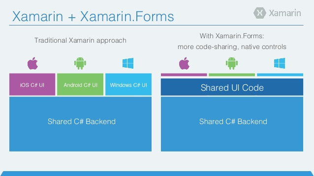

いきなりですが「Xamarinはいいぞ」の元ネタしってますか？
|
MicrosoftのC#、Xamarinエバンジェリスト 千代田まどか(通称ちょまど)さんの口癖
|
Twitterのハッシュタグにもなるぐらいいいらしい
Xamarinってなあに？
- クロスプラットフォーム開発環境とツール
- C#でAndroidやiOSなど複数のプラットフォーム向けの開発が可能
- WindowsではVisual Studio
- MacではXamarin Studio (Mac版のVSもあるけどまだ早い感じ)
- 2016.02にMicrosoftに買収され無償化(買収前は$299〜$1899/年)
２つの開発手法

| Xamarin Native |
Xamarin.Forms |
| ロジックのみ共通化。UIはネイティブで個別に作り込む |
ロジックとUIを共通化。UIは各プラットフォームの同じ役割のUIが自動マッピング |
何か作ってみよう！
ありきたりですがチャットアプリを作ってみました
クライアント
- もちろんXamarinでC#
-
Xamarin.Formsで複数プラットフォーム対応
サーバ
- もちろんPython
- フレームワークはBottleを使います
- サーバはHerokuを使います
- WebSocketで複数・同時通信を行う
(PythonやBottle、Herokuについては今回は触れません)
まとめ1
- ASP.NetやWPFにとっても似てるから経験者は翻訳しやすい
- .Netの機能が全て使えるわけではない(Android、iOS、Windowsフォンで使えるもののみPCLで利用可能)
- NuGetパッケージを追加したら「最新情報の更新」が必須。これに気が付かなくてハマりました。。
- Xamarin StudioがIDEとしては貧弱。。VSやIDEAと比べちゃうと。。
- 情報が英語サイトばかり。よくあることなのでこれはしゃーない
まとめ2
- コードビハインドのソースは50行程度で作れちゃうのでお手軽！
- Bottleのソースは30行程度で作れたのでお手軽！
- Heroku(PaaS)チョー便利。Java、Node.js、Scala、Clojure、Python、PHPのアプリ公開がすぐできちゃう。しかもPostgreSQLも無料で使えちゃう(MySQLを使う場合はクレジットカードの登録が必要)
結論
- 見た目を自由に開発できるXamarin Nativeの方が利用する需要がありそう
- まだまだこれからって感じがする(XCodeやSwift、Monacaとの比較もしてみたいところ)
- 業務で使うには勇気が必要